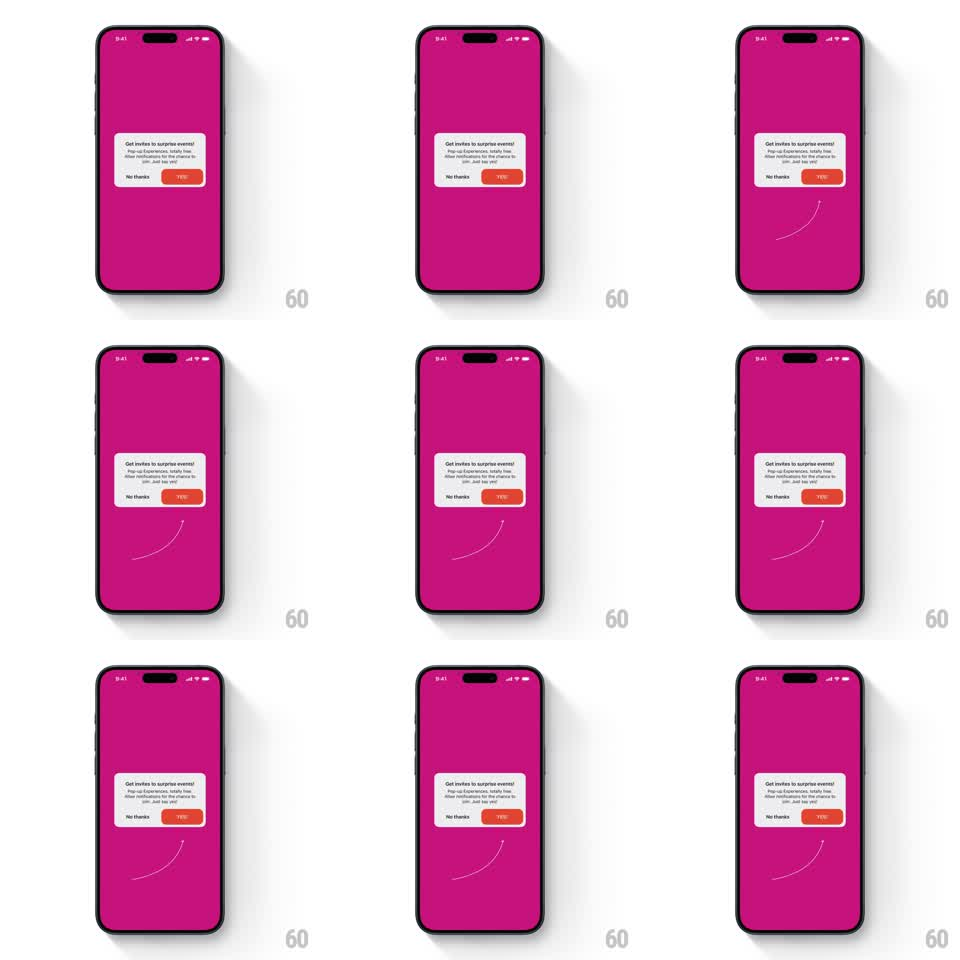

Media
Frame-by-frame

Rebuild this animation 1:1: Hostelworld's notification prompt - a hand-drawn white arrow draws itself from the bottom of the screen and curves up to point at the dialog's YES button.

Rebuild this animation 1:1: Hostelworld's notification prompt - a hand-drawn white arrow draws itself from the bottom of the screen and curves up to point at the dialog's YES button. ## Integration Integration: stack-agnostic spec - springs given as stiffness/damping, timed motions as duration + curve; map every value to your framework and animation library of choice. ## Scene Hostelworld, flat magenta: a centered white dialog - "Get invites to surprise events!" with explainer copy, "No thanks" text button and an orange "YES!" pill. Below it, a thin white hand-drawn curved arrow. ## Motion spec Pattern: hand-drawn arrow stroke-draw pointing at the CTA. - The dialog pops in first (scale 0.9 -> 1, spring ~400/16, 250ms). - 400ms later the arrow draws itself: a stroke starting low on the screen, sweeping in a loose hand-drawn curve up toward the YES button (stroke draw over 800ms, ease-in-out, with slight organic wobble in the path - never a geometric arc). - The arrowhead sketches on last (two quick strokes, 120ms each) and the whole arrow does a tiny settle wiggle (rotation +/-2deg, 200ms). - As the arrowhead lands, the YES button pulses once (scale 1 -> 1.08 -> 1, 250ms) - the arrow and the pulse read as one beat. - The arrow then idles with a very subtle bob (translateY +/-2px, 2s) until the user answers. - On either answer the dialog and arrow fade out together (250ms). ## Calibration - The arrow is white, 2px, with slightly uneven stroke width - marker texture, not vector-perfect. - The arrowhead must land pointing at the YES pill's lower edge - never at the dialog center. ## Reduced motion Arrow fades in fully drawn (300ms); no wiggle or bob. ## Don't miss - "No thanks" is plain text; "YES!" is the orange pill - the arrow sells exactly one of them. - The dialog copy stays static - no typing or shimmer effects on the text.